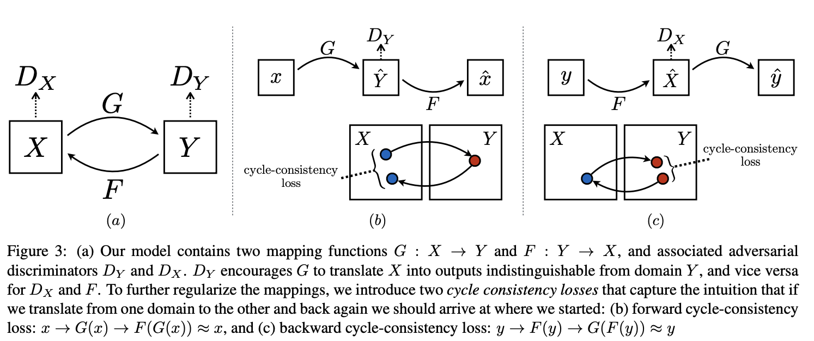

cyclegan_trainer Module

CycleganTrainer class uses Unpaired Image-to-Image Translation using Cycle-Consistent Adversarial Networks,
which is originally proposed in this arXiv . Implemented trainer module uses this Git code as reference work.
References
-
class
farabio.models.translation.cyclegan.cyclegan_trainer.CycleganTrainer(config)[source]
CycleganTrainer trainer class. Override with custom methods here.
- Parameters
- GanTrainerfarabio.core.basetrainer.BaseTrainer
Inherits GanTrainer class
-
define_data_attr()[source]
Define data related attributes here
-
define_model_attr()[source]
Define model related attributes here
-
define_train_attr()[source]
Define training related attributes here
-
define_test_attr()[source]
Define training related attributes here
-
define_log_attr()[source]
Define log related attributes here
-
define_compute_attr()[source]
Define compute related attributes here
-
define_misc_attr()[source]
Define miscellaneous attributes here
-
build_model()[source]
Abstract method that builds model
-
on_train_start()[source]
Hook: On start of training loop
-
start_logger()[source]
Hook: Starts logger
-
on_train_epoch_start()[source]
Hook: On epoch start
-
train_batch(args)[source]
Hook: batch of training loop
-
on_start_training_batch(args)[source]
Hook: On training batch start
-
generator_zero_grad()[source]
Hook: Zero gradients of generator
-
generator_loss()[source]
Total generator loss
-
generator_backward()[source]
Hook: sends backward
-
generator_optim_step()[source]
Discriminator optimizer step
-
identity_g_loss()[source]
Identity loss
- Returns
- scalar, scalar
torch.nn.L1Loss, torch.nn.L1Loss
-
gan_g_loss()[source]
GAN loss
- Returns
- scalar, scalar
torch.nn.MSELoss, torch.nn.MSELoss
-
cycle_g_loss()[source]
Cycle loss
- Returns
- scalar, scalar
torch.nn.L1Loss, torch.nn.L1Loss
-
discriminatorA_zero_grad()[source]
-
discriminatorA_loss()[source]
Loss for discriminator A: fake and real.
-
real_dA_loss()[source]
Loss for discriminator A: real
- Returns
- scalar
torch.nn.MSELoss
-
fake_dA_loss()[source]
Loss for discriminator A: fake
- Returns
- scalar
torch.nn.MSELoss
-
discriminatorA_backward()[source]
-
discriminatorA_optim_step()[source]
-
discriminatorB_zero_grad()[source]
-
discriminatorB_loss()[source]
Loss for discriminator B: fake and real.
-
real_dB_loss()[source]
Loss for discriminator B: real
- Returns
- scalar
torch.nn.MSELoss
-
fake_dB_loss()[source]
Loss for discriminator B: fake
- Returns
- scalar
torch.nn.MSELoss
-
discriminatorB_backward()[source]
-
discriminatorB_optim_step()[source]
-
on_end_training_batch()[source]
Hook: On end of training batch
-
on_train_epoch_end()[source]
Hook: On end of training epoch
-
on_epoch_end()[source]
Hook: on epoch end
-
get_trainloader()[source]
Hook: Retreives training set of torch.utils.data.DataLoader class
-
get_testloader()[source]
Hook: Retreives test set of torch.utils.data.DataLoader class
-
save_model()[source]
Save model
- Parameters
- epochint
current epoch
-
load_model()[source]
Hook: load model
-
on_test_start()[source]
Hook: on test start
-
test_step(args)[source]
Test action (Put test here)
-
on_end_test_batch()[source]
Hook: on end of batch test
{kind=link}